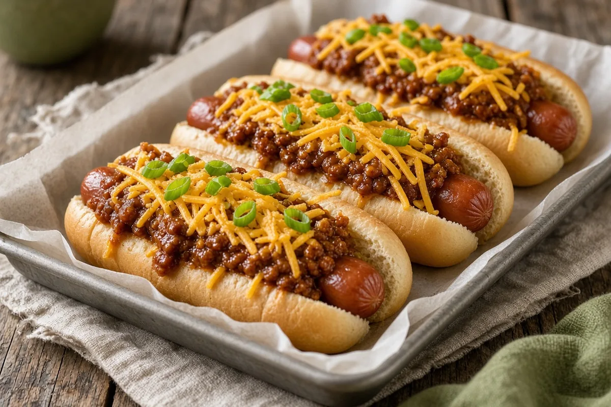

Chili Cheese Dogs
Beef franks in soft buns, buried under hot dog chili, shredded cheese, and green onions. Game-day easy.

Adapted from hormel.com
8 servings
By
Yield: 8 chili dogs
Prep:
Cook:
Total:
Difficulty: Easy
Ingredients
- 8 beef franks
- 8 hot dog buns, split
- 1 (15-oz) can hot dog chili
- Shredded cheese, for topping
- Sliced green onions, optional
Instructions
- Cook the franks according to the package directions, about 6 minutes. Warm the hot dog chili in a small saucepan at the same time.
- Tuck the franks into the buns, spoon the hot chili over them, and top with cheese and green onions.
Notes: AnyList showed this doubled; amounts are back at 1x. Toast the buns on the grill or in a skillet for sturdier dogs. Pair with Simple, Perfect Chili instead of canned for a homemade version.